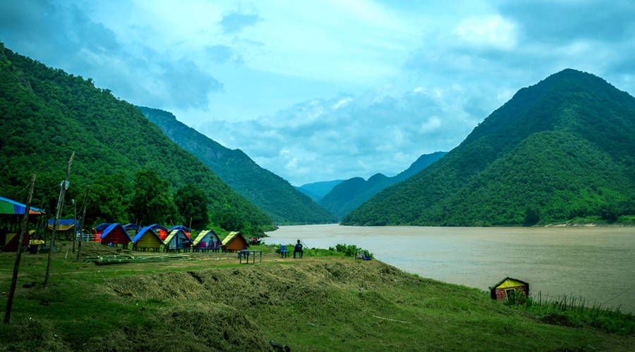

PAPIKONDALU

Papikondalu is divided into three geographical regions: Highlands, Waterfalls, Temples which slope down from the Western Ghats onto the Islands of undulating hill Stations and Mountain valleys into an unbroken 130 km long coastline with many picturesque Godavari River, interconnected with canals and small rivers.
Papikondalu Tourism Papikondalu mountain range runs along the River Godavari (Western Godavari) and is located in Rajahmundry, Andhra Pradesh. Papikondalu is a sheer fest to the eyes in terms of its scenic beauty. As the hills become closer and closer to the visitor, the width of the mighty Godavari becomes narrower.
Papikondalu mountain range spreads over a vast area, covering about three districts of East Godavari, West Godavari and Khammam Districts.To get the real essence of Papikondalu, one has to go for the boat journey either from Rajahmundry,Bhadachalamr.

papikondalu 1 day tour
VISITING PLACES-polavaram,devipatnam,papikondalu.

kolluru huts 2 days tour
VISITING PLACES-polavaram,papikondalu,kolluru huts,pamuleru waterfalls

bhadrachalam 2 days tour
VISITING PLACES-bhadrachalam temple,perantapalli,pochavaram,
Visit Papikondalu - The Mountain Range Resembling a Woman's Hair!

Running along the river Godavari (Western Godavari), Papikondalu mountain range is located in Rajahmundry, Andhra Pradesh. Papikondalu is a sheer eye-candy. As the hills get closer to the visitor, the width of the mighty Godavari becomes narrower.
Initially named as 'Papidi' Kondalu with Paidi meaning the middle partition of a woman’s hair in Telugu, this view is said to resemble that partition. However, the region came to be known as Papikondalu in the local language eventually. The river narrowing its twists and turns along with the Papi Hills is a breathtaking sight! Its beauty is often compared to Kashmir's, as the area around the ranges is quaint and bountiful with nature. The ranges also boast of waterfalls at Munivaatnam.
BEST TIME TO VISIT
October to March is the best time to visit Papikondalu. It is advisable to avoid the summers as the region experiences high and humid temperatures during this time. The monsoon lasts between July and September. Winters are quite pleasant as well, thus an ideal time to make a trip to Papikondalu.
HOW TO REACH PAPIKONDALU
Papi-Kondalu is easy to reach from all the nearby cities. The nearest airport and railway station is located in Rajahmundry, which is around 60 km away. NH-5 passes through it and has excellent road connectivity with all the major towns in the vicinity. There are also boat services available from Rajahmundry, though they are few in number.